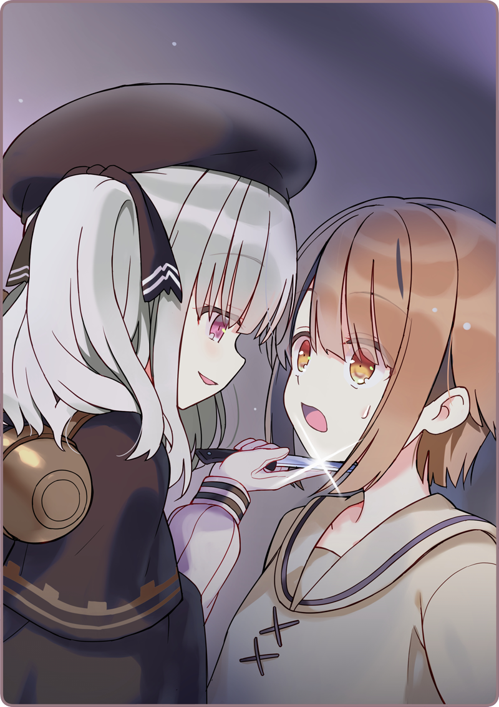

皇都に雨が降る。
朝からどんよりとした曇り空。昼下がりにはしとしと泣いて石畳を濡らして、夜になったいまでも微かな雨音を残している。
それも当然で、なぜなら梅雨真っ盛りだからだ。
閉店したばかりの黒猫亭。丁寧にテーブルを拭いていると、じわりと額に汗が滲んでくる。微かに空いた小窓から、吹き込んでくるひんやりとした風が心地よい。お店の片隅では、シャノがしきりに顔を洗っていた。
鴉羽「ららら～ら～らら～♪ ら～ららら～♪」
鼻歌交じりに、床をモップがけしているのは鴉羽さんだ。いつもは気を張っているのに、こんなに上機嫌なのは珍しい。そういえば、営業中もずっと笑顔だったっけ。
鴉羽「ららら～らら～♪」
ブーツを鳴らして、華麗にくるりとターン。
ますます様子がおかしい。雨続きのせいで客足もいまいち、食材の足は速いし、髪だってうまくまとまらないはずなのに。
宇佐美「……なにか、いいことあったんですかね？」
箒星「ふふふ……実はですねぇー」
隣で砂糖壺を回収している箒星さんに話を振る。今日は酒屋さんのお仕事は休みをもらったらしく、黒猫亭の手伝い兼ボクの料理修行に付き合ってくれていた。
箒星「先代のオーナーが帰国するらしいですよ」
宇佐美「先代というと……」
箒星「そう、鴉羽さんやわたしたちを直してくれたマスターです。ずっと大陸にいってたんですけどねぇー」
宇佐美「奥宮さんが言ってましたね。アルタリアですか？」
箒星「ローベリアですよ」
宇佐美「え゛」
思わず掃除の手を止めて、顔を上げる。
宇佐美「あのローベリアですか」
箒星「はい、３６年間ずーーーっと戦争していた帝政ローベリアです」
宇佐美「知らなかった……行けるものなんですね」
箒星「終戦したとはいえ、すごく大変だったみたいですよー。でも、平和的な技術交換ということとで……」
宇佐美「それでいけたんですね」
箒星「裏技と寝技を使ってなんとかねじ込んだとか」
宇佐美「ははは……勇気ありますね」
箒星「一度言い出したら聞かない人ですからねぇ」
宇佐美「でも、鴉羽さんは心配だったでしょうね。無事で帰ってきてくれるといいんですが」
箒星「きっと、それは問題ありませんよ。レーツェルを連れて行きましたから」
宇佐美「レーツェル……」
箒星「彼女は、ローベリア製の
自律人形ですから」
箒星さんと話をしていると、ドアベルが涼やかな音を響かせる。
灰桜「ただいまですっ」
帰ってきたのは灰桜だ。
こうもり傘を畳んで、雨粒を落としている。
お使いがあって、オーナーの奥宮さんの元へ足を運んでいたのだ。
宇佐美「お帰り、濡れなかった？」
いちおうタオルを持って出迎える。
灰桜「雨下駄を借りたのでへっちゃらです！ それより大変なことが起きました」
宇佐美「ええっ、どうしたの？」
箒星「背嚢に雨が入ったとか？ だったら念のため点検しないと……」
灰桜の言葉を聞きつけて、箒星もやってくる。
灰桜「いえ、油紙を巻いていただいたのでそれは大丈夫なのですが～」
宇佐美「じゃあ大変なことって？」
灰桜「
機械人形の暴走事故があったそうです！」
その言葉に、ぴくりと反応する鴉羽。
鴉羽「……なんですって？」
灰桜「二区で騒ぎになったそうです」
鴉羽「まさか、戦闘用
機械人形？ でも、それはもう……」
灰桜「いえ、こう、大きめの……わんこぐらいのサイズだそうです！」
宇佐美「……わんこ？」
どうにも想像ができない。
ボクの知る
機械人形と言えば、厳めしくて重量感のある戦闘用人形だ。停戦条約にも盛り込まれている通り、製造・運用が禁止されている。戦後すぐは十分管理されておらず、事故も多かったが、最近はすっかり対策されているはずだ。
箒星「きっと荷役用の第四世代人形ですね。“銀太郎”じゃないでしょうか？」
鴉羽「ああ、なるほど」
宇佐美「そんなのがあるんですか？」
鴉羽「山岳地帯で荷物を運ぶために開発された人形よ。犬にも見えるかもしれないわね。戦闘力はないけれど……」
箒星「でも、馬力はあるので、けっこう危ないですよ」
灰桜「みゅっ、怖いです」
鴉羽「……その子も可哀想ね」
箒星さんと鴉羽さんいわく、暴走人形というのは正確ではないらしい。
機械人形は命令がないと動けない。自分の上位機種が誤った命令を送ったり、過去の命令を取り消さずにおいている場合がある。すると、傍から見るとまるで理解不能の行動を取っているように見える。この状態を暴走と称するのだ。
おそらくその“銀太郎”も、なにかの輸送命令が残り続けたままだったのだろう。たまたま誰かが見つけて、物珍しさで起動した結果、こういう結果になったのだろう……ということだ。
鴉羽「気をつけないとね。あまり夜に外を出歩かないほうがいいわ」
箒星「わたし、いまから酒屋さんに帰るのですが……」
鴉羽「箒星なら大丈夫じゃないかしら？」
箒星「心配してくださいよ～」
＊ ＊ ＊
閉店してからもしばらく、箒星さんは練習に付き合ってくれた。
さすがに焼き上がるのを待っていると遅くなりすぎるので、オーブンにセットするところまで手伝ってもらってから帰宅してもらった。暴走事故は気になるけれど、箒星さんは実のところあまり気にしていない様子だった。鴉羽さんの言うとおり、箒星さんなら大丈夫……なのかもしれない。
宇佐美「よしよし、いい感じにできたぞ」
オーブンを開けると、甘い香りが厨房中に立ちこめる。長方形のケーキ型の中で、こんがりと膨らんでいる姿。テーブルの上に取り出してみると、ほかほかと蒸気を漏らしながら、ふかふかと柔らかそうに揺れた。平刃のナイフで切り分けてみると……
宇佐美「……おお」
思わず感嘆の声が漏れる。パウンドケーキの中は見事な黄金色で、レーズンならぬほくほくした黒豆が底面に詰まっている。見栄えは申し分ない。あつあつの一切れを頬張ってみると、思わず飛び上がりそうなほどおいしい。
これは売り物になる。
珈琲との相性もばっちりで、みんなも賛成してくれるだろう。ボクはさっそく小さく切り分けると、小皿にせっせと盛っていた。この感動を分かち合いたい。これぐらいの大きさなら人形でも食べられるだろう。最初に誘うなら、やっぱり彼女だろうと思った。
＊ ＊ ＊
宇佐美「灰桜、起きてる？」
ドアをノックするが、反応はない。
いるのかな？と思って、すこしだけドアを開けて呼びかけてみた。
宇佐美「ありゃ……寝てるのか」
ちらりと細くて白い足が覗いていた。
灰桜はお腹の上で手を組んで、ベッドに横になっていた。目は閉じて、穏やかな寝顔を見せている。正確にいうと寝ているのではなくて、電源を切って休眠状態になっているのだけど。論理機関はあまり長時間稼働させるのはよくないらしく、こうして人間と同じように休ませる必要があるのだという。
宇佐美（せっかくだし、置いていこうかな）
布巾をかけておけば乾かないだろう。冷めてもおいしいと、箒星さんも言っていたし。だから室内に入ると、机の上にそっとお皿を置いた。
宇佐美「………」
灰桜の姿を見る。
真っ暗な室内。月光だけがその顔を照らし出している。まるで子供みたいな、無垢な寝顔だ。いや、実際灰桜は子供なのかもしれない。大事なことはなにひとつ憶えていなくて、だけど大切なことはしっかり憶えている……。
なんだかその柔らかな髪を撫でたくなって、そっと手を伸ばす。
ふわりと風が吹いて、その前髪を揺らした。
冷たい声が響いた。
気がつくと窓が開いていて、カーテンが揺れている。聞こえたのは、ボクでも、灰桜でも、ましてや黒猫亭のどの人形でもない声……。
月光差し込む窓辺。まるで猫のようなしなやかさで身体を起こす黒い影。
切りそろえられた銀髪が、さらりと流れる。赤い瞳が、じっとボクを見つめていた。
宇佐美「………え？」
と思った次の瞬間。
彼女は消えていた。まるで最初からそこに存在していなかったように。
いったいいまのは何だったのだろう……？

宇佐美「ひぃ！？」
気がつけば、首筋に冷たい感触がある。
背後に気配がある。手袋に包まれた、しなやかな指先。
そこに握られているのは――冷たい輝きを放つナイフだ。

 「なに者ですの？」
「なに者ですの？」